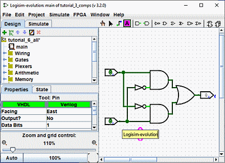
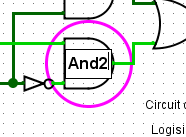

上一节： 第 2 步：添加导线
第 3 步：添加文本
向电路添加文本并非使其工作所必需；但如果想向他人展示自己的电路，一些标签可以帮助说明电路中不同部分的用途。
选择 “文本”工具（ ）。可以单击一个输入引脚并开始输入，为它添加标签。（最好直接单击输入引脚，而不是单击标签希望出现的位置，因为这样标签会随引脚移动。）输出引脚也可以用同样的方式添加标签。也可以点击任意位置并开始输入，在其他位置放置标签。
）。可以单击一个输入引脚并开始输入，为它添加标签。（最好直接单击输入引脚，而不是单击标签希望出现的位置，因为这样标签会随引脚移动。）输出引脚也可以用同样的方式添加标签。也可以点击任意位置并开始输入，在其他位置放置标签。

许多组件都可以添加标签，例如单击其中一个门时，也可以为它指定标签。

还有其他几种方式可以修改标签。
- 使用 “编辑”工具（
 ）双击组件。
）双击组件。 - 使用 “文本”工具（
 ）单击标签。
）单击标签。 - 在属性表中编辑 “标签”属性。

下一节： 第 4 步：测试电路